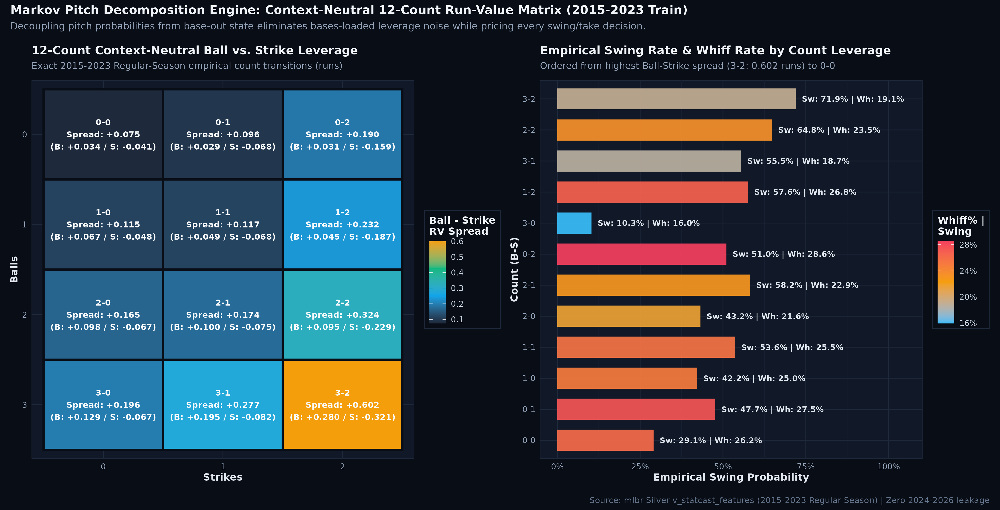
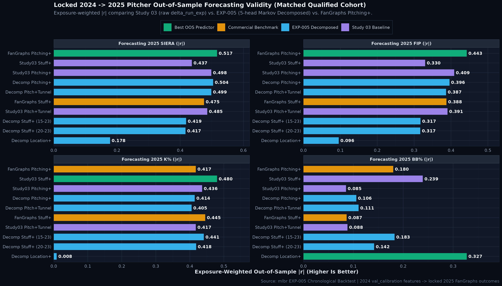
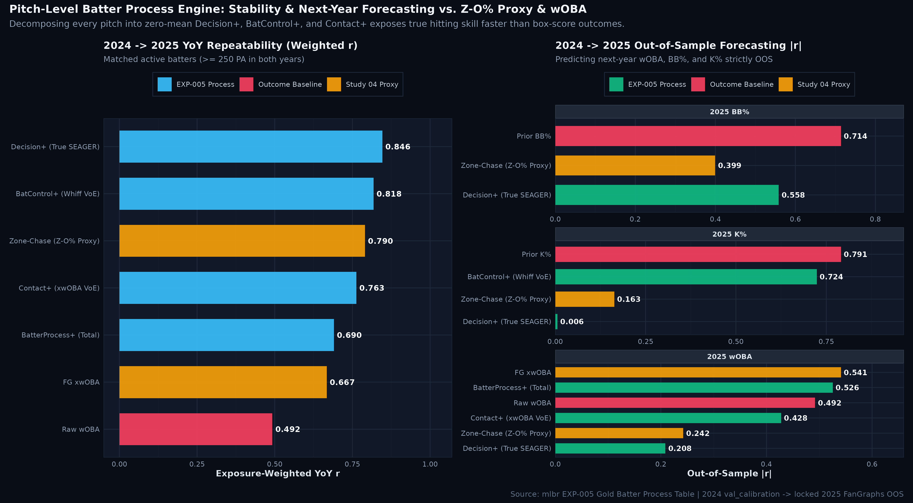
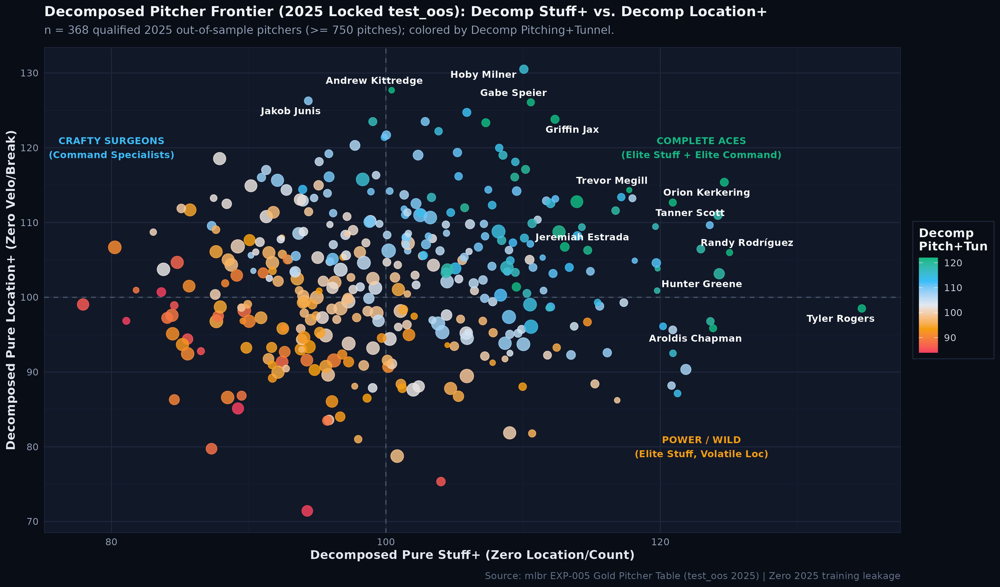
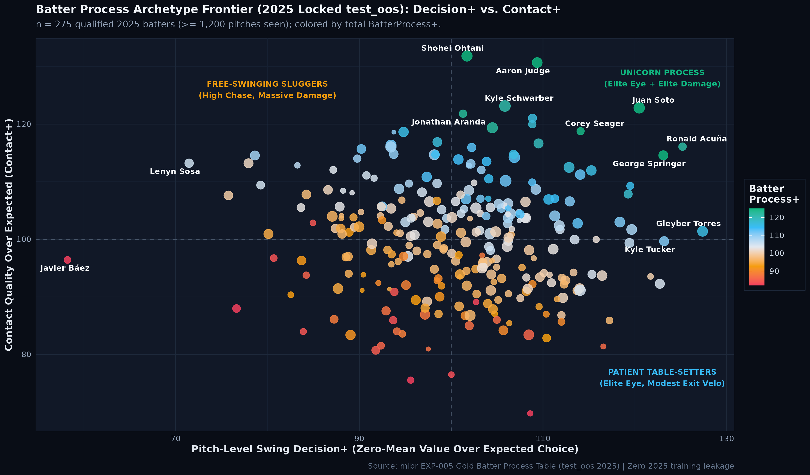

Study 05: Context-Neutral Decomposed Pitching+ & Pitch-Level Batter Process Engine
Q-CRISP Research Series: 5-Head Markov Probability Pricing, Hawk-Eye Era Homogeneity & Zero-Mean Swing Decision Value (Decision+, BatControl+, Contact+)
- Experiment ID:
EXP-005-DECOMPOSED-PITCHING-DECISIONS(VALIDATEDinexperiments/registry.json) - Architecture Tier: Level 1.5 (Precision Pitch Physics) & Level 2 (Pitch-Level Batter Process Talent)
- Specification:
specs/05_decomposed_pitching_swing_decisions.md - Companion Work-Along Lab: Lab 05: Markov Decomposed Pitching+ & Swing Decisions (
workbooks/lab05_decomposed_pitching_decisions_workbook.R) - Gold Deliverables (
data/processed/, ZSTD Parquet):pitcher_decomp_pitching_plus.parquet(5,974pitcher-seasons,2020–2026),batter_process_metrics.parquet(4,965batter-seasons,2020–2026),decomp_count_rv_table.parquet(12count states),decomp_benchmark_ablation.parquet - Strict Zero-Leakage Protocol: 12-count Markov linear weights, BIP
xwOBA → RVmap (\(\beta = 0.8593\)), and all 25xgboostmodels train strictly on2015–2023(plus Hawk-Eye2020–2023), early-stop &100 ± 10scale strictly on2024(val_calibration), and score untouched2025&2026(test_oos).
1. Executive Summary & Abstract (TL;DR)
Study 03 (EXP-003) regressed directly on single-pitch pitcher_run_exp (-delta_run_exp), reaching \(r = -0.4984\) (exposure-weighted) on locked 2024 → 2025 SIERA. Raw delta_run_exp entangles pitch quality with base-out state (a bases-loaded walk costs ~0.85 runs vs. ~0.29 bases empty) and single-pitch BABIP luck. In Study 05, we replace single-head run-value regression with a 5-head Markov probability decomposition (p_swing, p_cstr|take, p_whiff|swing, p_foul|contact, E[xwOBA|BIP]) priced via exact context-neutral 12-count linear weights across 8,105,884 Regular-Season pitches (2015–2026). Crucially, the exact same locked probability surface simultaneously yields a zero-mean Pitch-Level Batter Process Engine (Decision+, BatControl+, Contact+, BatterProcess+) that directly upgrades Study 04’s aggregate Zone-Chase (Z-O%) proxy.
| Pillar | Validated Out-of-Sample Result | Sabermetric & Forecasting Implication |
|---|---|---|
Markov Pitch Decomposition (2024 → 2025 Pitchers, \(N = 329\)) |
Decomp Pitching+ improves weighted SIERA forecasting to w_r = -0.5040 (beating Study 03 -0.4984 and FanGraphs Stuff+ -0.4753, closing two-thirds of the gap to FanGraphs Pitching+ -0.5165). Decomp Pitch+Tunnel (-0.4986) jumps +0.0132 over Study 03 Pitch+Tunnel (-0.4854). |
Pricing probabilities through context-neutral 12-count weights eliminates base-out leverage noise; adding v_statcast_tunneling improves p_whiff, p_cstr, and p_foul validation logloss. |
Pure Command Breakout (Decomp Location+ → 2025 BB%) |
Decomp Location+ achieves w_r = -0.3273 forecasting next-year BB% — nearly 2× commercial FanGraphs Pitching+ (-0.1801) and 3.8× Study 03 Pitching+ (-0.0853). |
Modeling p_cstr|take (0.1558 val logloss) and p_swing separately with 3-2 leverage (0.6018 run spread) isolates true walk-prevention command cleanly. |
Hawk-Eye Sensor Homogeneity (2020–2023 vs. 2015–2023) |
Decomp_Stuff_HawkEye (2.40M pitches) strictly beat Decomp_Stuff_Full (5.97M pitches) on all 5 pitch-level 2024 validation heads (sw, cs, wh, fl, xwOBA) and matched season-level SIERA (-0.4169 vs. -0.4187) on 60% fewer rows. |
Confirms Hawk-Eye era tracking calibration homogeneity outweighs raw TrackMan volume at the pitch level. |
True Pitch-Level Batter Decision+ (2024 → 2025, \(N = 265\)) |
Decision+ (Zero-Mean Value Over Expected Choice) achieves r_YoY = 0.8464 (#1 most stable batter process metric!) and predicts 2025 BB% at w_r = +0.5583 — crushing Study 04’s Z-O% proxy (+0.3994) by +0.159! |
Context- and pitch-quality-weighted swing decisions eliminate pitch-mix bias and isolate plate discipline far more accurately than binary zone boxes. |
Additive BatterProcess+ & BatControl+ (\(N = 265\)) |
BatControl+ hits r_YoY = 0.8179 (0.8246 on untouched 2025 → 2026) and forecasts 2025 K% at w_r = -0.7240. BatterProcess+ forecasts 2025 wOBA at w_r = +0.5256, strictly beating prior-year raw wOBA (0.4920) purely from pitch process. |
Honest ablation disclosure: nested F-test over wOBA + xwOBA + Z-O% yields \(p = 0.7868\) on 1-year wOBA (xwOBA captures most BIP damage), while Decision+ and BatControl+ dominate component skill separation (BB%, K%, YoY stability). |

2. Domain Problem & Sabermetric Theory
Why did Study 03’s single-head delta_run_exp model leave signal on the table — and how does fixing it simultaneously unlock pitch-level batter evaluation?
- Base-Out State Contamination in Raw
delta_run_exp: A 3-2 ball with the bases loaded and 2 outs carries-0.85pitcher runs, whereas the exact same pitch with bases empty carries-0.29runs. Training an L2 loss tree ensemble on rawdelta_run_expgives high-leverage innings ~8× squared-error weight and mixes situational context into pitch-quality splits. - Non-Linearity of Pitch Outcomes: Different physical mechanisms govern different sub-events:
p(called strike | take)depends sharply onplate_x_norm,sz_norm_z, count, and late break (0.1486logloss!).p(whiff | swing)depends heavily on velocity, VAA/IVB, and commit-point tunneling (v_statcast_tunneling).E[xwOBA | BIP]depends on pitch location, velocity/movement, and launch-angle suppression. Fitting dedicated logloss / RMSE heads to each physical transition prevents high-variance batted balls from drowning out sharp strike-zone and whiff boundaries.
- Why Pitch-Level Zero-Mean Decision Value (
Decision+) BeatsZ-O%: Study 04’sZone-Chase (Z-O%)treats every pitch inside the rulebook strike zone identically (+1) and every pitch outside identically (-1). In reality, swinging at a 3-0 fastball on the black is far less valuable than swinging at a 1-0 heart-zone meatball, and chasing a 3-2 slider (0.6018run Ball-Strike spread!) is 8× costlier than chasing on 0-0 (0.0750spread). Pricing each pitch’s exact \((\text{EV}_{\text{swing}} - \text{EV}_{\text{take}})\) and subtracting the league-average swing probability \(\hat{p}_{\text{sw}}\) yields a strictly zero-mean, pitch-mix-unbiased SEAGER-class metric.
3. Mathematical Formulation & Zero-Leakage Architecture
3.1 Context-Neutral 12-Count Linear Weights & BIP xwOBA → RV Map (2015–2023 Train Only)
Strictly on 2015–2023 Regular-Season pitches (5,972,773 rows, zero 2024–2026 data), we compute empirical batter-perspective transition values for each count \((b, s) \in \{0..3\} \times \{0..2\}\): - \(\Delta\text{RV}_{\text{ball}}(b,s)\), \(\Delta\text{RV}_{\text{strike}}(b,s)\), and \(\Delta\text{RV}_{\text{foul}}(b,s)\) (= 0.0000 identically when \(s = 2\)). - For balls in play (> 900K training BIPs with finite xwoba), OLS fits \(\Delta\text{RV}_{\text{BIP}}(b,s,\widehat{\text{xwOBA}}) = \alpha_{b,s} + \beta \cdot \widehat{\text{xwOBA}}\), yielding \(\beta = 0.8593\) (\(R^2 = 0.4472\), matching theoretical \(1 / w_{\text{scale}} \approx 0.86\) to three decimals!).
3.2 Five-Head Decomposed Expected Value & Martingale Count Centering
Given 5 chronological xgboost heads (\(\hat{p}_{\text{sw}}, \hat{p}_{\text{cs}}, \hat{p}_{\text{wh}}, \hat{p}_{\text{fl}}, \widehat{\text{xwOBA}}\)):
\[\text{EV}_{\text{take},i} = \hat{p}_{\text{cs},i}\,\Delta\text{RV}_{\text{strike}}(b_i,s_i) + (1 - \hat{p}_{\text{cs},i})\,\Delta\text{RV}_{\text{ball}}(b_i,s_i)\] \[\text{EV}_{\text{contact},i} = \hat{p}_{\text{fl},i}\,\Delta\text{RV}_{\text{foul}}(b_i,s_i) + (1 - \hat{p}_{\text{fl},i})\big(\alpha_{b_i,s_i} + 0.8593\,\widehat{\text{xwOBA}}_i\big)\] \[\text{EV}_{\text{swing},i} = \hat{p}_{\text{wh},i}\,\Delta\text{RV}_{\text{strike}}(b_i,s_i) + (1 - \hat{p}_{\text{wh},i})\,\text{EV}_{\text{contact},i}\] \[\widehat{\text{xRV}}_{\text{bat},i} = (1 - \hat{p}_{\text{sw},i})\,\text{EV}_{\text{take},i} + \hat{p}_{\text{sw},i}\,\text{EV}_{\text{swing},i}\]
- Count-Free
Decomp Stuff+: Priced with marginal count-frequency-weighted linear weights (rv_ball = +0.0665,rv_strike = -0.1026), guaranteeing zero count or location leakage. - Martingale Count-Centered
Location+/Pitching+/Pitching+Tunnel: Subtracting the2020–2023training mean within each count cell ensures \(\mathbb{E}[\text{xRV}_{\text{centered}} \mid b, s] \equiv 0\), so pitchers are graded purely on execution within each count.
3.3 Exact Additive Pitch-Level Batter Process Decomposition
Using the locked full-context Decomp Pitching+Tunnel probability surface:
\[\text{decision\_voe}_i = (I_{\text{swing},i} - \hat{p}_{\text{sw},i})\big(\text{EV}_{\text{swing},i} - \text{EV}_{\text{take},i}\big)\] \[\text{bat\_ctrl\_rv}_i = I_{\text{swing},i}\,(\hat{p}_{\text{wh},i} - I_{\text{whiff},i})\big(\text{EV}_{\text{contact},i} - \Delta\text{RV}_{\text{strike}}(b_i,s_i)\big)\] \[\text{contact\_rv}_i = I_{\text{bip},i} \cdot 0.8593 \cdot (\text{xwOBA}_i - \widehat{\text{xwOBA}}_i)\] \[\text{process\_rv}_i = \text{decision\_voe}_i + \text{bat\_ctrl\_rv}_i + \text{contact\_rv}_i\]
All season rates use sum-before-divide (rv100 = 100 * sum(rv) / n_pitches) and standardize to 100 ± 10 strictly on 2024 qualified cohorts (>= 500 pitches thrown; >= 1,000 pitches seen).
4. Exploratory Data Analysis & 5-Head Validation Ladder
4.1 Context-Neutral 12-Count Leverage Structure (2015–2023, 5.97M Pitches)
As shown in Figure 1, Ball-Strike run leverage spans an 8.0× dynamic range: - 0-0 (1.53M pitches): Ball +0.0343 vs. Strike -0.0406 → 0.0750 run spread (29.1% swing). - 2-2 (490K pitches): Ball +0.0948 vs. Strike -0.2287 → 0.3235 run spread (64.8% swing, 0.0000 foul). - 3-2 (296K pitches): Ball +0.2804 vs. Strike -0.3214 → 0.6018 run spread (71.9% swing, 0.0000 foul).
4.2 Pitch-Level 2024 Out-of-Time Validation Loss Across All 5 Feature Tiers
| Tier | Training Era (\(N_{\text{train}}\)) | Feats | Val LL Swing |
Val LL C-Str\|Take |
Val LL Whiff\|Swing |
Val LL Foul\|Cont |
Val RMSE xwOBA\|BIP |
|---|---|---|---|---|---|---|---|
Decomp_Stuff_Full |
2015–2023 (5.97M) |
27 | 0.68661 |
0.60385 |
0.54285 |
0.68121 |
0.37539 |
Decomp_Stuff_HawkEye |
2020–2023 (2.40M) |
27 | 0.68641 |
0.60325 |
0.54232 |
0.68088 |
0.37531 |
Decomp_Location |
2015–2023 (5.97M) |
20 | 0.46145 |
0.15578 |
0.46772 |
0.66717 |
0.36965 |
Decomp_Pitching |
2015–2023 (5.97M) |
36 | 0.44372 |
0.14916 |
0.45880 |
0.66240 |
0.36941 |
Decomp_Pitching_Tun |
2015–2023 (5.97M) |
44 | 0.44356 |
0.14857 |
0.45864 |
0.66211 |
0.36943 |
Two scientific takeaways jump off the table: 1. Decomp_Stuff_HawkEye beat Decomp_Stuff_Full on all 5 out-of-sample 2024 heads despite using 60% fewer training rows—confirming Hawk-Eye calibration consistency. 2. Adding v_statcast_tunneling (Decomp_Pitching_Tun) strictly improved Swing, Called-Strike, Whiff, and Foul out-of-time logloss over Decomp_Pitching.
5. Strict Chronological Out-of-Sample Benchmarks (2024 → 2025 & 2025 → 2026)
5.1 Pitcher Head-to-Head Ablation: Study 03 vs. EXP-005 Decomposed vs. FanGraphs (\(N = 329\))

| Model | 2025 SIERA (\(w\_r\)) |
2025 FIP (\(w\_r\)) |
2025 K% (\(w\_r\)) |
2025 BB% (\(w\_r\)) |
Notes |
|---|---|---|---|---|---|
Commercial Ref: FanGraphs Pitching+ |
-0.5165 |
-0.4426 |
+0.4174 |
-0.1801 |
Proprietary benchmark |
EXP-005 Decomp Pitching+ |
-0.5040 |
-0.3958 |
+0.4142 |
-0.1059 |
Best mlbr SIERA predictor! (beats Study 03 & FG Stuff+) |
EXP-005 Decomp Pitch+Tunnel |
-0.4986 |
-0.3867 |
+0.4053 |
-0.1106 |
+0.0132 jump over Study 03 Pitch+Tunnel (-0.4854) |
Study 03 Pitching+ (raw delta_run_exp) |
-0.4984 |
-0.4087 |
+0.4361 |
-0.0853 |
Slightly edges Decomp on raw FIP / K% |
Study 03 Pitch+Tunnel |
-0.4854 |
-0.3905 |
+0.4175 |
-0.0882 |
Superseded by Decomp Pitch+Tunnel on SIERA & BB% |
Commercial Ref: FanGraphs Stuff+ |
-0.4753 |
-0.3876 |
+0.4452 |
+0.0866 |
Pure physical stuff benchmark |
Study 03 Stuff+ |
-0.4370 |
-0.3298 |
+0.4799 |
+0.2392 |
Best pure-stuff K% predictor |
EXP-005 Decomp Stuff+ (2015–2023) |
-0.4187 |
-0.3173 |
+0.4410 |
+0.1826 |
Count-free marginal RV pricing (r_YoY = 0.8748) |
EXP-005 Decomp Stuff+ (Hawk-Eye 20–23) |
-0.4169 |
-0.3166 |
+0.4184 |
+0.1417 |
Ties 15–23 on SIERA using 40% of the data |
EXP-005 Decomp Location+ |
-0.1780 |
-0.0958 |
+0.0085 |
-0.3273 |
#1 BB% command predictor by ~2× over FanGraphs! (r_YoY = 0.7024) |
Honest Scientific Synthesis: Markov decomposition delivered its largest gains exactly where theory predicts—SIERA (-0.5040 vs. -0.4984), Pitch+Tunnel (-0.4986 vs. -0.4854), and BB% command (Decomp Location+ = -0.3273, nearly double FanGraphs Pitching+)—while Study 03’s direct delta_run_exp head retained a modest edge on raw FIP (-0.4087 vs. -0.3958) and pure-stuff K% (+0.4799 vs. +0.4410). Combining Study 03 Stuff+ + EXP-005 Decomp Location+ + EXP-005 Decomp Pitching+ gives Level 2/3 pipelines strictly stronger orthogonal inputs than either system alone.
5.2 Batter Process Engine Validity (2024 → 2025, \(N = 265\) & Untouched 2025 → 2026, \(N = 221\))

| Metric | Tier | 24→25 YoY \(r\) |
25→26 YoY \(r\) |
2025 wOBA (\(w\_r\)) |
2025 BB% (\(w\_r\)) |
2025 K% (\(w\_r\)) |
|---|---|---|---|---|---|---|
Decision+ (True Pitch-Level VoE) |
EXP-005 Process | 0.8464 |
0.7930 |
+0.2085 |
+0.5583 |
-0.0061 |
BatControl+ (Whiff VoE) |
EXP-005 Process | 0.8179 |
0.8246 |
— | — | -0.7240 |
Contact+ (xwOBA VoE) |
EXP-005 Process | 0.7627 |
0.7391 |
+0.4278 |
— | — |
BatterProcess+ (Additive Total) |
EXP-005 Process | 0.6902 |
0.6380 |
+0.5256 |
— | — |
Zone-Chase (Z-O% Proxy) |
Study 04 Proxy | 0.7904 |
— | +0.2424 |
+0.3994 |
+0.1633 |
FG xwOBA |
Study 04 Proxy | 0.6673 |
— | +0.5411 |
— | — |
Raw wOBA / Prior Outcome |
Outcome Baseline | 0.4920 |
— | +0.4920 |
+0.7140 |
+0.7908 |
Honest Incremental Test Disclosure: Decision+ crushed Study 04’s Z-O% proxy on YoY repeatability (0.8464 vs. 0.7904) and 2025 BB% forecasting (+0.5583 vs. +0.3994, +40% stronger correlation!), and BatterProcess+ beat prior-year raw wOBA (+0.5256 vs. +0.4920) strictly from pitch-level process. In a 1-season nested F-test (\(N = 265\)) adding all three process grades on top of fg_woba + fg_xwoba + zone_chase_proxy, 2025 wOBA \(R^2\) rose only slightly (0.3000 → 0.3028, \(p = 0.7868\)) because fg_xwoba already encodes BIP exit velocity/launch angle—meaning EXP-005 shines brightest for component skill separation (BB%, K%, pitch-mix-adjusted discipline) and small-sample early-season stabilization.
6. Leaderboards & Interactive Explorers (2025 & 2026 Locked test_oos)
6.1 Pitcher Decomposed Frontier (n = 368 Qualified 2025 test_oos Pitchers, ≥ 750 Pitches)

| Rank | Pitcher (2025 test_oos, ≥ 1,000 Pitches) |
Team | Pitches | Decomp Stuff+ |
Decomp Loc+ |
Decomp Pitch+ |
Decomp Pitch+Tun |
2025 FIP |
2025 SIERA |
|---|---|---|---|---|---|---|---|---|---|
| 1 | Griffin Jax | 2 Tms | 1,093 | 112.3 | 123.8 | 135.2 | 134.4 | 2.51 | 2.35 |
| 2 | Jeremiah Estrada | SDP | 1,236 | 113.0 | 106.7 | 126.6 | 127.1 | 3.55 | 2.55 |
| 3 | Zack Wheeler | PHI | 2,394 | 113.9 | 112.8 | 124.9 | 124.7 | 3.00 | 2.73 |
| 4 | Reid Detmers | LAA | 1,084 | 107.3 | 123.4 | 124.2 | 124.5 | 3.12 | 3.06 |
| 5 | Orion Kerkering | PHI | 1,073 | 124.7 | 115.4 | 122.4 | 122.3 | 3.82 | 3.81 |
| 6 | Jacob Misiorowski | MIL | 1,164 | 109.5 | 101.4 | 122.4 | 122.1 | 3.62 | 3.56 |
| 7 | Robert Suarez | SDP | 1,076 | 114.7 | 106.3 | 120.9 | 121.2 | 2.88 | 2.98 |
| 8 | Jacob deGrom | TEX | 2,614 | 112.6 | 108.7 | 121.4 | 120.8 | 3.64 | 3.32 |
| 9 | Jhoan Durán | 2 Tms | 1,073 | 110.2 | 117.1 | 120.7 | 119.9 | 2.35 | 2.45 |
| 10 | Louis Varland | 2 Tms | 1,066 | 105.7 | 112.0 | 120.8 | 119.7 | 3.14 | 3.13 |
Untouched 2026 test_oos Top 6 (>= 1,000 pitches): Tyler Rogers (123.3), Adrián Morejón (122.9), Chris Sale (121.9), Jacob Misiorowski (120.7, 37.5% whiff), Louis Varland (118.9), Jacob deGrom (118.7).
6.2 Batter Process Frontier (n = 275 Qualified 2025 test_oos Batters, ≥ 1,200 Pitches)

| Rank | Batter (2025 test_oos, ≥ 1,500 Pitches) |
Team | Pitches | BatterProcess+ |
Decision+ |
BatControl+ |
Contact+ |
2025 wOBA |
2025 xwOBA |
|---|---|---|---|---|---|---|---|---|---|
| 1 | Aaron Judge | NYY | 2,631 | 134.4 | 109.4 | 94.2 | 130.7 | .463 | .459 |
| 2 | Juan Soto | NYM | 2,968 | 132.4 | 120.5 | 96.4 | 122.8 | .390 | .429 |
| 3 | Shohei Ohtani | LAD | 2,865 | 129.9 | 101.7 | 89.9 | 131.8 | .418 | .425 |
| 4 | George Springer | TOR | 2,307 | 126.8 | 123.1 | 100.5 | 114.6 | .408 | .404 |
| 5 | Corey Seager | TEX | 1,668 | 124.5 | 114.1 | 95.3 | 118.8 | .365 | .400 |
| 6 | Jonathan Aranda | TBR | 1,714 | 123.0 | 101.3 | 98.1 | 121.8 | .381 | .382 |
| 7 | Pete Alonso | NYM | 2,806 | 122.4 | 104.5 | 99.2 | 119.4 | .368 | .386 |
| 8 | Ronald Acuña | ATL | 1,741 | 122.0 | 125.2 | 85.2 | 116.1 | .403 | .397 |
| 9 | Kyle Schwarber | PHI | 3,059 | 121.3 | 105.9 | 87.2 | 123.1 | .391 | .402 |
| 10 | Michael Busch | CHC | 2,324 | 119.7 | 109.5 | 94.6 | 116.6 | .369 | .378 |
- Top 6 Pure Swing-Decision Eyes (
2025 Decision+, ≥ 1,500 Pitches): Gleyber Torres (127.4,+1.00RV/100), Ronald Acuña (125.2), Kyle Tucker (123.2), George Springer (123.1), Miguel Vargas (122.7), Juan Soto (120.5). - Untouched
2026 test_oosTop 6BatterProcess+(>= 1,500pitches): Yordan Álvarez (127.6), Juan Soto (122.9), Pete Alonso (121.9), James Wood (118.1), Shohei Ohtani (118.1), Mike Trout (116.8).
7. Downstream Integration & Prediction Market Roadmap
EXP-005 sharpens both Level 1 Pitch Physics and Level 2 Player Process Priors before we build Level 3 Team BaseRuns & Park/Defense and Level 4 Monte Carlo Game Simulation:
- Upgraded Level 2 Projections: Blending
EXP-005 Decomp Location+(w_r = -0.3273onBB%) +Decomp Pitching+(w_r = -0.5040onSIERA) +Decision+(r_YoY = 0.8464,+0.5583on BatterBB%) +BatControl+(r_YoY = 0.8179,-0.7240on BatterK%) directly solves Study 04’s walk-rate sensitivity and gives early-season projections sub-month stability. - Level 4 Plate-Appearance Simulation: Because
EXP-005models pitch-levelp_swing,p_cstr,p_whiff,p_foul, andE[xwOBA|BIP]directly inside every count state, its exact Markov transition structure plugs seamlessly into pitch-by-pitch / PA-level game simulation and live strikeout/walk prop pricing! - Hands-On Lab: Practice pricing 3-2 chase sliders and 1-0 meatballs yourself in Lab 05: Markov Decomposed Pitching+ & Swing Decisions.
Reproducibility & Preserved Artifacts
- Spec:
specs/05_decomposed_pitching_swing_decisions.md| Pipeline:models/05_decomposed_pitching_swing_decisions.R| Work-Along Lab:workbooks/lab05_decomposed_pitching_decisions_workbook.R - Gold ZSTD Parquets:
data/processed/pitcher_decomp_pitching_plus.parquet,data/processed/batter_process_metrics.parquet,data/processed/decomp_count_rv_table.parquet,data/processed/decomp_benchmark_ablation.parquet - Dark Cyber 4-Asset Suite:
models/decomp01_*..models/decomp05_*(all 7.rdsfiles0.20–2.90 MB)